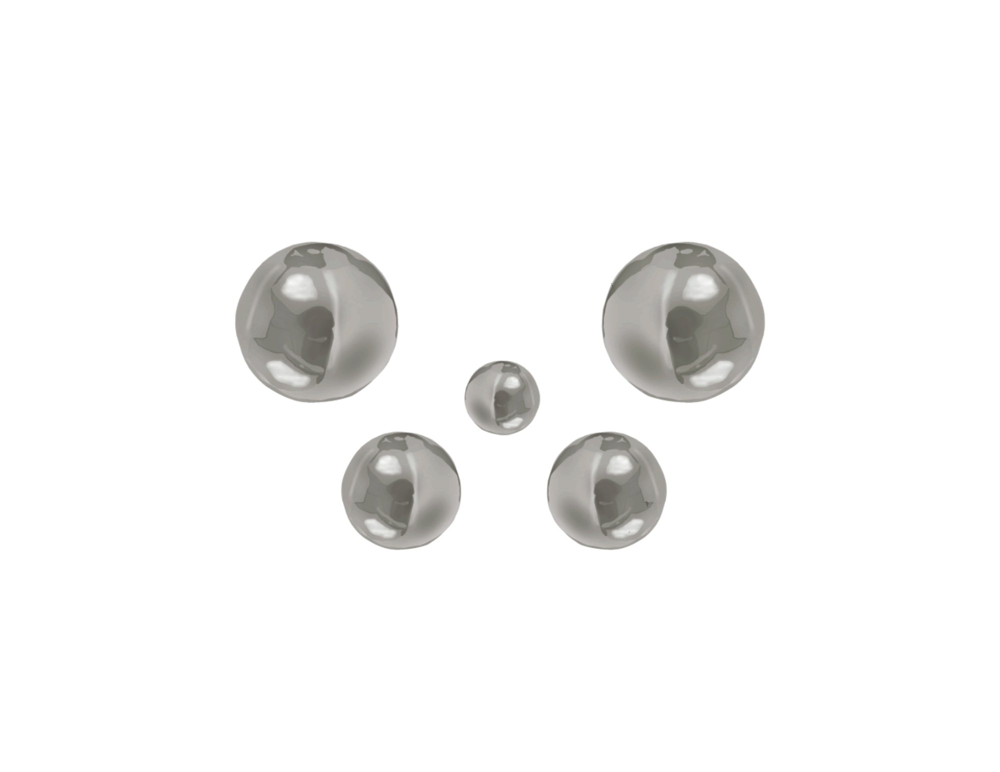

(01)
Collections
(02)

Fashion designer based in Berlin with a focus on garment construction, pattern making, and contemporary design.
Practical experience through atelier work, internship, and independent creative projects.